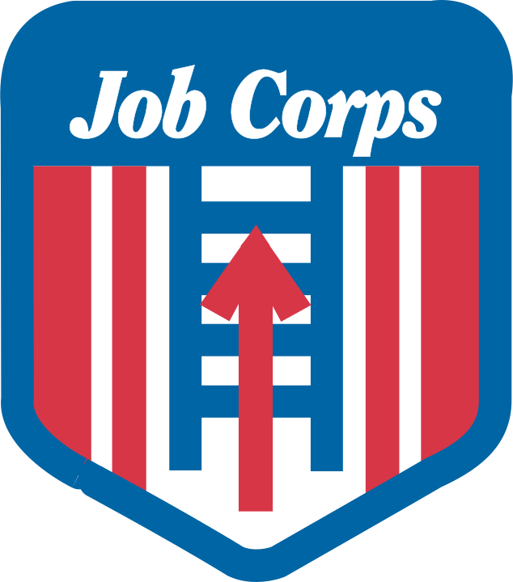

Lance Gagner
Fargo, ND 58102
(701)-552-2622 Gagnerlance@gmail.com
(701)-552-2622 Gagnerlance@gmail.com
Objective:
An interesting position with a growing company
Experience
Forum Communications
May 13th, 2018 - April 14th, 2020
Layout Specialist
- Created layouts and placed ads for pages for various properties.
- Insured proper content was in place and performed changes to content as needed
- Prepared and organized content for compatibility and availability
- Gave final approval for certain content for printing
KVRR
February 14th, 2018 - May 11th, 2018
Production Assistant
- Operated sound equipment, camera, and teleprompter for morning broadcasts
- Assisted studio setup and keeping equipment clean and operational.
 Columbia Basin Job Corps
September 6th, 2016 - August 24th, 2017
CISCO Networking Student
- Completed courses for A+ and CCENT certifications.
- Completed a 6 week internship at iFiber Communications help desk.
- Demonstrated proficiency with MS Windows installation and advanced set-up.
- Demonstrated skill with CISCO router and Switch set-up.
- Secured networks, PCs, and data with wireless security, back-up and local passwords.
- Planning and physical setup for small to medium business.